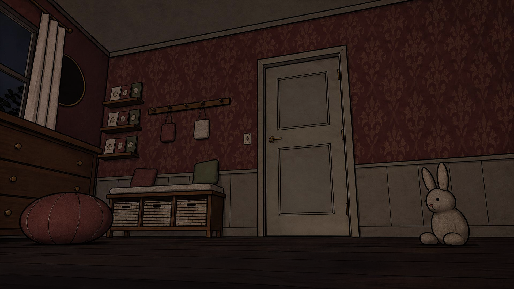
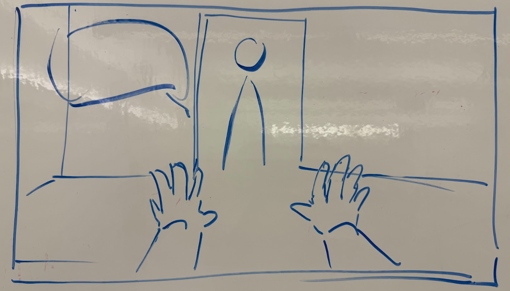

CDM game jam / Team project
Baby Night.
A browser horror game about calling for help and keeping your rhythm.
A baby alone in a nightmare has to survive until morning. Press Space five times at a steady pace to call the parents. Cry too quickly and their patience wears out. Wait too long and the monster reaches you.
Presented as Crybunny in our team showcase.
Desktop keyboard required. Uses the Space key.
- MY ROLE
- Programmer, alongside Stone
- TEAM
- Six people across programming, art, story, and audio
- TECH
- TypeScript, Vite, HTML / CSS
- CONTEXT
- CDM game jam

My contribution
Programming with
the team.
Stone and I worked together as programmers. We chose the stack and set up a pipeline our artists could feed into.
The project brought together 2D art, a 3D environment, character work, story, and audio. Our programming work included deciding how those contributions would reach the game, alongside choosing the technology to build it.
We used TypeScript and Vite for a browser build. The game uses DOM elements and CSS, with a fixed 16:9 frame that scales to the window. The project setup supports image assets and PNG animation sequences.
My contribution was on the programming side. The visual work shown here belongs to the team, credited below.
From our showcase
The shared
starting point.

The original idea centred on a baby’s satisfaction and the parents’ patience.
The team’s showcase traces that idea into a horror survival game with rhythm elements. Space remained the way to communicate. The playable loop asks the player to pace five cries while a monster approaches.
The art process combined 3D environment work with 2D drawing. Our stack and asset pipeline needed to accommodate those different contributions within the jam’s time constraint.
The result is a playable browser game with a short introduction that lets players rehearse the input before the night begins.
THE CALL / TRY THE RHYTHM
Five cries, at a steady pace.
The game’s own rule and numbers, cut down to one call. Start a night, then cry five times before the monster arrives. Too fast and your parents lose patience; too slow and the call starts over.
CALL
PARENTS’ PATIENCE
MONSTER
Press start, then cry with the button (or Space while it has focus).
Team credits
Who made what
- Arya S.
- Developer
- Stone Y.
- Developer
- Justin D.
- Story & audio
- Iris W.
- 2D artist
- Jay D.
- 3D environment artist
- Milian C.
- Character artist
Roles as credited in the team showcase.
Tools and process. The team’s showcase records Claude Code use for TypeScript implementation, with developers overseeing code structure. It also records AI assistance for early character concepts, story development, and combining the 3D and 2D art styles.